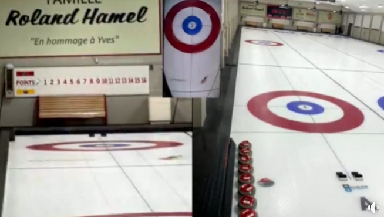
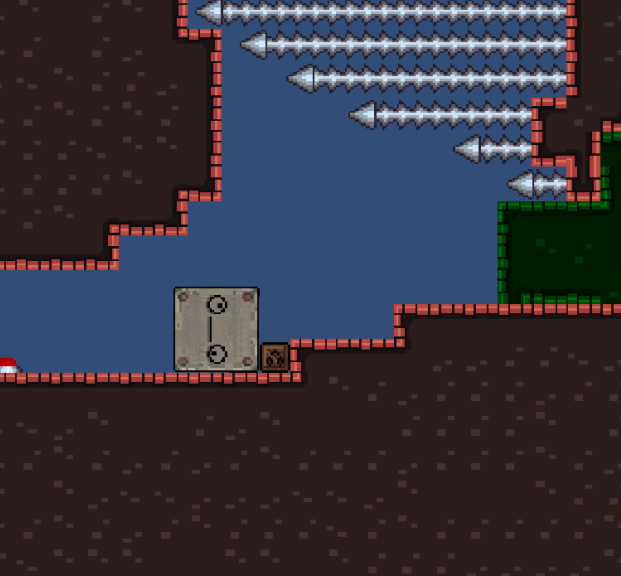
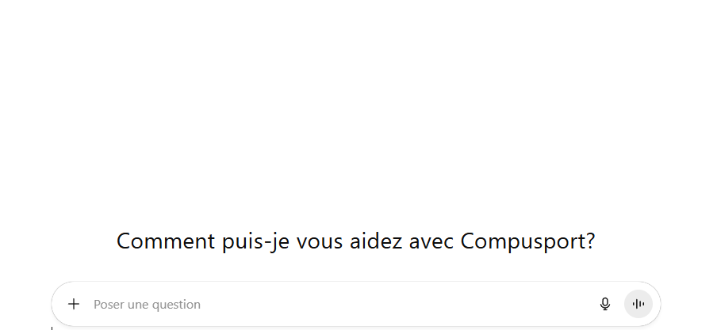

Scolarité & Formations
Formation actuelle
Techniques de l'informatique (DEC) — En cours
Cégep de l'Abitibi-Témiscamingue - Rouyn-Noranda, Québec
Formation antérieure
Diplôme d'études secondaires (DES)
École d'Iberville - Rouyn-Noranda, Québec
Autre Formations
Formation de Curling Canada sur la sécurité dans le sport
Formation d'une psychologue sportive sur la gestion du stress lors d'événements importants
Compétences & Connaissances
Connaissances Techniques
Langages de Programmation
- PHP
- JavaScript
- C#
- SQL
- HTML/CSS
- PowerShell
Frameworks & Outils de Développement
- Blazor — Framework web moderne
- Unity — Moteur de jeu pour le développement
- Visual Studio Code — Environnement de développement intégré
- OBS Studio — Configuration et gestion de streaming vidéo
- Word — Traitement de texte et création de documents
- Excel — Analyse de données et gestion de feuilles de calcul
- Gimp — Édition et retouche d'images
Compétences Professionnelles
- Leadership — Expérience en tant que capitaine d'équipe de curling pour apporter une équipe à gagner
- Résolution de problèmes — Approche analytique pour identifier et résoudre les problèmes
- Apprentissage autonome — Capacité à apprendre rapidement
- Travail d'équipe — Collaboration efficace dans des environnements académiques et sportifs
- Gestion du temps — Capacité à gérer efficacement les priorités. Gestion Études / Sports de haut niveau
Réalisations
Mes projets techniques les plus significatifs, qui démontrent mon évolution et mes compétences
en développement.
Infrastructure de Streaming pour Événements de Curling

Date : 2024 – Présent • Durée : Projet continu • Étiquettes : Réseaux Streaming Vidéo OBS Studio
Description
Conception et mise en place d'une infrastructure de streaming vidéo pour diffuser en direct
des parties de curling. Le système utilise des iPhones comme caméras sans fil connectées en réseau
local (LAN) et OBS Studio pour la publication du direct.
Objectifs & Résultats
- Objectif : Créer une solution de streaming gratuite et fiable pour utiliser des iPhones comme caméra
- Technologies utilisées : OBS Studio, mediaDevices, réseau LAN, iPhones
- Résultats : Système simple et fonctionnel permettant une diffusion stable de qualité avec
la facilité d'utiliser plusieurs caméra
Apprentissages
Ce projet m'a permis de développer des compétences dans l'utilisation de mediaDevices et la gestion de flux vidéo
Meet The Tower — Jeu 2D avec Unity

Date : 2025 • Durée : 2 mois • Étiquettes : Développement de Jeux Unity C#
Description
Développement d'un jeu vidéo 2D utilisant le moteur Unity et le langage C#. Le travail était en équipe de deux.
Le but du jeux, qui se jouait à deux sur un même poste, était de, en étant un cube (un petit et un gros) de parvenir à la fin d'un niveau
Objectifs & Résultats
- Objectif : Ce familiariser avec l'utilisation d'Unity
- Technologies utilisées : Unity, C#
- Résultats :Un jeu simple avec plusieurs niveaux, assez difficile mais challengant à jouer
Apprentissages
Ce travail m'a permis de mieux maitriser Unity ainsi que d'améliorer mes capaciter à travailler en équipe
Mise en place d'un chatbot

Date : 2024 • Durée : 2 mois • Étiquettes : Développement web API IA C#
Description
Développement d'un ChatBot pour répondre au question des clients en utilisant l'API d'OpenAI
Objectifs & Résultats
- Objectif : Mettre en place un ChatBot pour faciliter l'aide aux clients
- Technologies utilisées : C#
- Résultats :Un chatbot qui peux répondre au question, aider à l'utilisation de l'application et faire certaine tâche à votre place
Apprentissages
Ce travail m'a permis d'apprendre le language C#, me familiariser avec l'utilisation d'API et d'en aprendre plus sur le fonctionnement des intelligences artificielles
Mise en place d'un système de partage d'écran Web
Date : 2025 • Durée : 2 mois • Étiquettes : Développement web .NET SignalR C#
Description
Développement d'un système de partage d'écran Web permettant à plusieurs utilisateurs de visualiser et donner des indications sur un écran à distance en temps réel.
Il y a l'option de partager un écran complet et grace à une signature de pixel il est possible de détecter la position d'une fenètre dans l'écran et ce même s'il y en a plusieurs.
Objectifs & Résultats
- Objectif : Mettre en place un système de partage d'écran Web pour faciliter l'assistance à distance sans avoir la nécéssité d'installer un logiciel comme Team Viewer
- Technologies utilisées : C# - .NET - TypeScript
- Résultats :Un système de partage d'écran fonctionnel permettant une assistance efficace en temps réel en temps réel
Apprentissages
Ce travail m'a permis d'apprendre le language TypeScript, me familiariser avec l'utilisation de SignalR et d'améliorer mes compétences en développement web avec .NET
Contact
Coordonnées
Réseaux Sociaux & Profils
Au plaisir d'échanger avec vous !